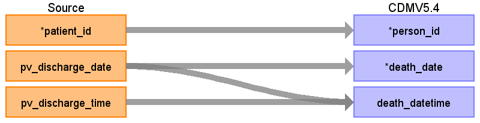

ターゲットテーブル:death
・当テーブルはPatientVisitテーブルから生成する
本項では、PatientVisitをもとに生成された、deathテーブルの各項目のとの出力結果の対応を記載する。
・PatientVisitに退院実施レコードの退院先コードが「死亡」の場合、退院日を死亡日としてレコードを生成する

| Destination Field | Source field | Logic | Comment field |
|---|---|---|---|
| person_id | patient_id | person.person_source_valueと結合してperson_idを取得・登録する |
|
| death_date | pv_discharge_date | TO_DATE(pv_discharge_date, 'YYYYMMDD') AS death_date | PV_ADTSEGMENT='ADT^A03^ADT_A03’(退院実施)かつPV_DISCHARGE_CD_L='20'(死亡)のレコードのみ、PV_DISCHARGE_DATEを登録する
|
| death_datetime | pv_discharge_date pv_discharge_time |
CASE WHEN pv_discharge_time = '999999' OR pv_discharge_time IS NULL OR pv_discharge_time ~ '^[0-9]{6}$' = false OR SUBSTRING(pv_discharge_time, 1, 2)::integer >= 24 OR SUBSTRING(pv_discharge_time, 3, 2)::integer >= 60 OR SUBSTRING(pv_discharge_time, 5, 2)::integer >= 60 THEN TO_TIMESTAMP(pv_discharge_date || '000000', 'YYYYMMDDHH24MISS') ELSE TO_TIMESTAMP(pv_discharge_date || pv_discharge_time, 'YYYYMMDDHH24MISS') END AS death_datetime |
PV_ADTSEGMENT='ADT^A03^ADT_A03’(退院実施)かつPV_DISCHARGE_CD_L='20'(死亡)のレコードのみ、PV_DISCHARGE_DATE+PV_DISCHARGE_TIMEを登録する |
| death_type_concept_id | 32817（EHR）固定とする | ||
| cause_concept_id | （設定しない） | ||
| cause_source_value | （設定しない） | ||
| cause_source_concept_id | （設定しない） |